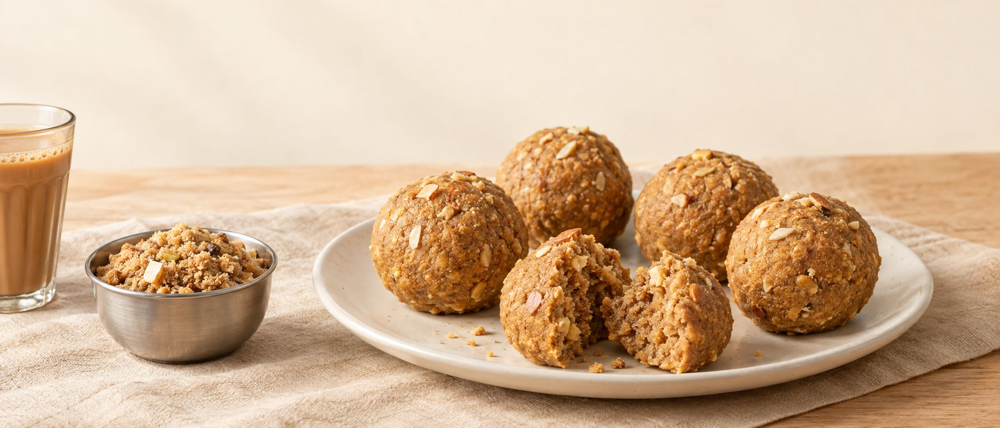

Panjiri · Pinni · Mixes
A little taste of home.
Panjiri, pinni and everyday mixes for the snack cupboard.
Shop snacks
Meet Atta Pinni

Temporary AI-generated image · replace with real product photography